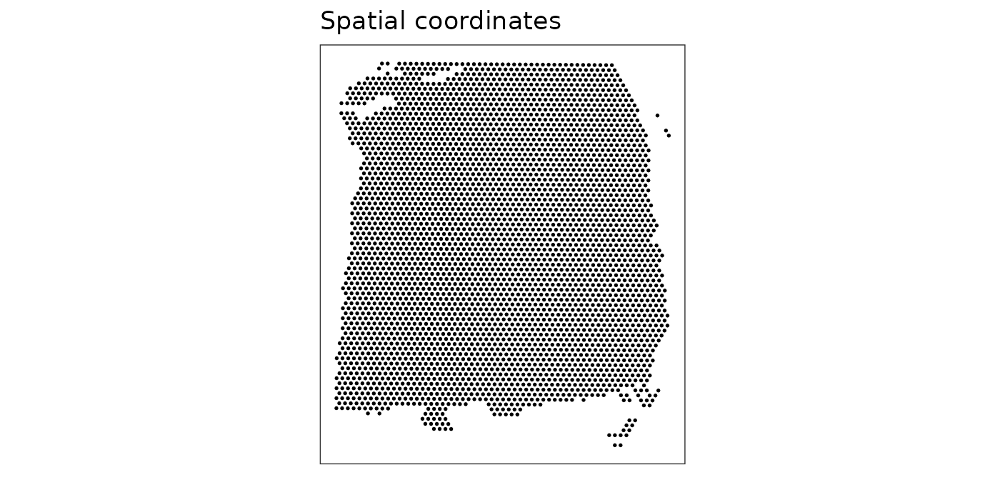
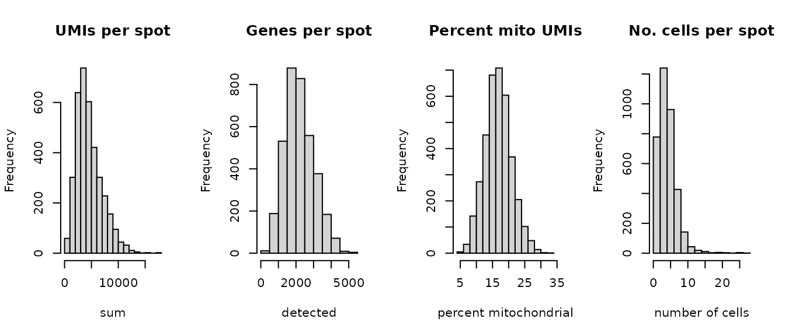
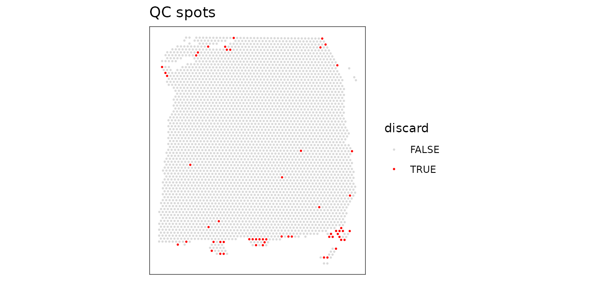
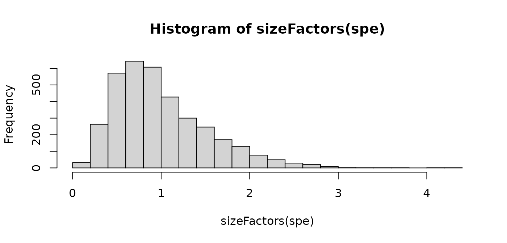
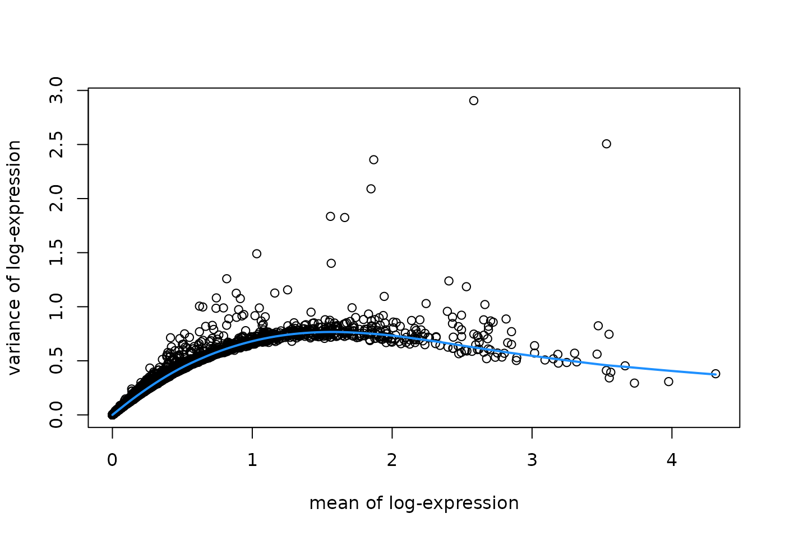
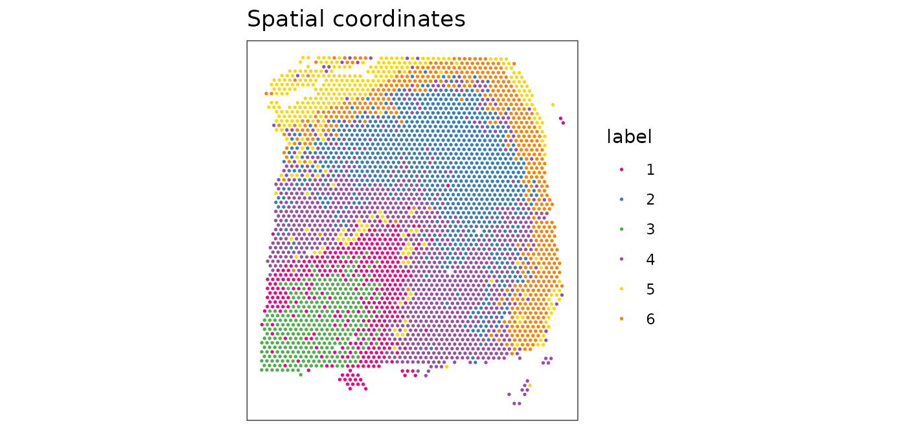
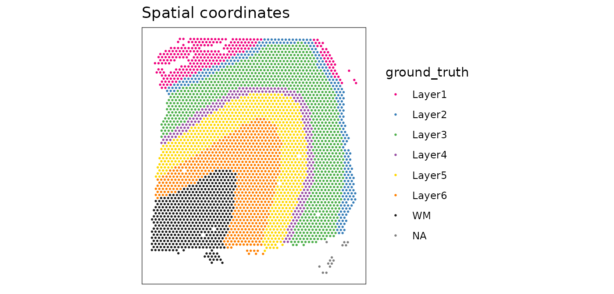
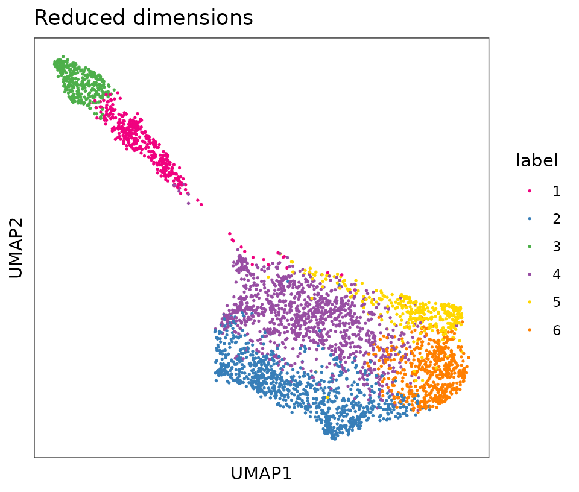
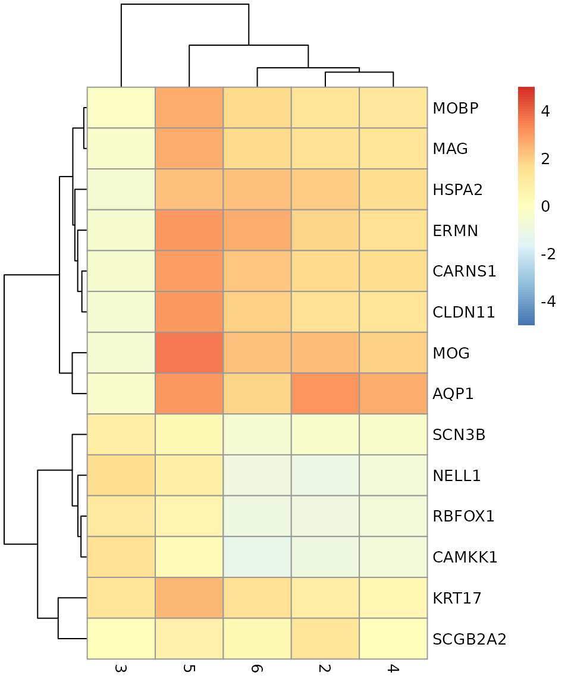
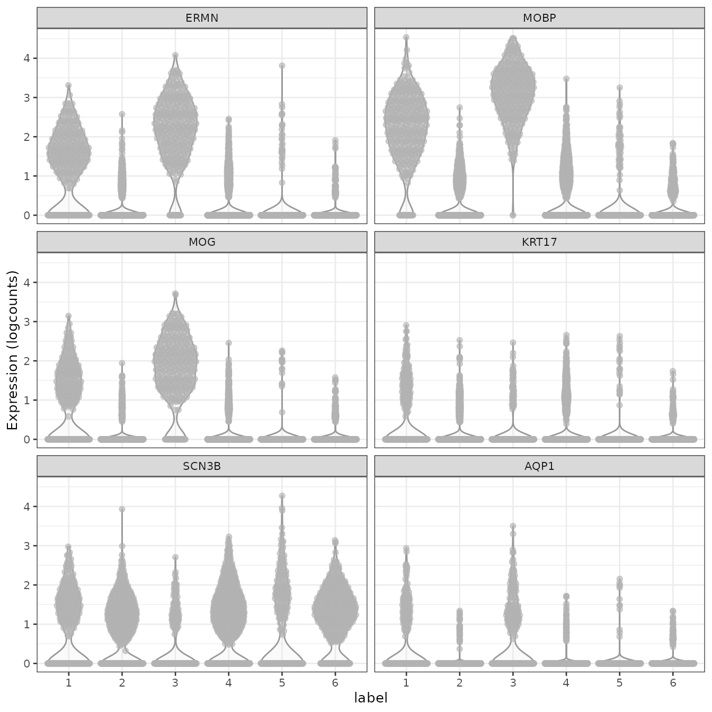

vignettes/Vignette03_Analysis_workflow.Rmd
Vignette03_Analysis_workflow.RmdLast updated: 2021-08-06
This workflow analyzes one sample of human brain from the dorsolateral prefrontal cortex (DLPFC) region, measured using the 10x Genomics Visium platform.
This is a 10x Genomics Visium dataset generated from healthy human brain samples from the dorsolateral prefrontal cortex (DLPFC) region.
In the full dataset, there are 12 samples in total, from 3 individuals, with 2 pairs of “spatially adjacent” replicates (serial sections) per individual (4 samples per individual). The individuals and spatially adjacent replicates can be considered as blocking factors. Each sample spans the six layers of the cortex plus white matter in a perpendicular tissue section.
For the examples in this workflow and the analysis chapters, we use a single sample from this dataset (sample 151673).
This dataset is described in our publication @Maynard2021. The full dataset is publicly available through the spatialLIBD Bioconductor package, and the analysis code from our paper is provided in the HumanPilot GitHub repository. The dataset can also be explored interactively through the spatialLIBD Shiny web app.
Here, we load a single sample from this dataset (sample 151673), which is available as a SpatialExperiment object from the STexampleData package.
For this workshop, we use the latest development version of STexampleData available from GitHub.
library(SpatialExperiment)
library(STexampleData)
# load dataset using latest GitHub version
spe <- load_data("Visium_humanDLPFC")
spe
#> class: SpatialExperiment
#> dim: 33538 4992
#> metadata(0):
#> assays(1): counts
#> rownames(33538): ENSG00000243485 ENSG00000237613 ... ENSG00000277475
#> ENSG00000268674
#> rowData names(3): gene_id gene_name feature_type
#> colnames(4992): AAACAACGAATAGTTC-1 AAACAAGTATCTCCCA-1 ...
#> TTGTTTGTATTACACG-1 TTGTTTGTGTAAATTC-1
#> colData names(3): cell_count ground_truth sample_id
#> reducedDimNames(0):
#> mainExpName: NULL
#> altExpNames(0):
#> spatialData names(6) : barcode_id in_tissue ... pxl_col_in_fullres
#> pxl_row_in_fullres
#> spatialCoords names(2) : x y
#> imgData names(4): sample_id image_id data scaleFactor
# alternatively: load dataset from ExperimentHub
# spe <- Visium_humanDLPFC()
# speAs an initial check, plot the spatial coordinates (spots) in x-y dimensions on the tissue slide, to check that the object has loaded correctly and that the orientation is as expected.
We use visualization functions from the ggspavis package to generate plots.
# plot spatial coordinates (spots)
plotSpots(spe)
First, we subset the object to keep only spots over tissue.
# subset to keep only spots over tissue
spe <- spe[, spatialData(spe)$in_tissue == 1]
dim(spe)
#> [1] 33538 3639Next, calculate spot-level QC metrics using the scater package [@McCarthy2017], and store the QC metrics in colData.
# identify mitochondrial genes
is_mito <- grepl("(^MT-)|(^mt-)", rowData(spe)$gene_name)
table(is_mito)
#> is_mito
#> FALSE TRUE
#> 33525 13
rowData(spe)$gene_name[is_mito]
#> [1] "MT-ND1" "MT-ND2" "MT-CO1" "MT-CO2" "MT-ATP8" "MT-ATP6" "MT-CO3"
#> [8] "MT-ND3" "MT-ND4L" "MT-ND4" "MT-ND5" "MT-ND6" "MT-CYB"
# calculate per-spot QC metrics and store in colData
spe <- addPerCellQC(spe, subsets = list(mito = is_mito))
head(colData(spe), 3)
#> DataFrame with 3 rows and 9 columns
#> cell_count ground_truth sample_id sum detected
#> <integer> <factor> <character> <numeric> <numeric>
#> AAACAAGTATCTCCCA-1 6 Layer3 sample_151673 8458 3586
#> AAACAATCTACTAGCA-1 16 Layer1 sample_151673 1667 1150
#> AAACACCAATAACTGC-1 5 WM sample_151673 3769 1960
#> subsets_mito_sum subsets_mito_detected subsets_mito_percent
#> <numeric> <numeric> <numeric>
#> AAACAAGTATCTCCCA-1 1407 13 16.6351
#> AAACAATCTACTAGCA-1 204 11 12.2376
#> AAACACCAATAACTGC-1 430 13 11.4089
#> total
#> <numeric>
#> AAACAAGTATCTCCCA-1 8458
#> AAACAATCTACTAGCA-1 1667
#> AAACACCAATAACTGC-1 3769Select filtering thresholds for the QC metrics by examining distributions using histograms.
# histograms of QC metrics
par(mfrow = c(1, 4))
hist(colData(spe)$sum, xlab = "sum", main = "UMIs per spot")
hist(colData(spe)$detected, xlab = "detected", main = "Genes per spot")
hist(colData(spe)$subsets_mito_percent, xlab = "percent mitochondrial", main = "Percent mito UMIs")
hist(colData(spe)$cell_count, xlab = "number of cells", main = "No. cells per spot")
par(mfrow = c(1, 1))
# select QC thresholds
qc_lib_size <- colData(spe)$sum < 500
qc_detected <- colData(spe)$detected < 250
qc_mito <- colData(spe)$subsets_mito_percent > 30
qc_cell_count <- colData(spe)$cell_count > 12
# number of discarded spots for each metric
apply(cbind(qc_lib_size, qc_detected, qc_mito, qc_cell_count), 2, sum)
#> qc_lib_size qc_detected qc_mito qc_cell_count
#> 7 5 3 47
# combined set of discarded spots
discard <- qc_lib_size | qc_detected | qc_mito | qc_cell_count
table(discard)
#> discard
#> FALSE TRUE
#> 3582 57
# store in object
colData(spe)$discard <- discardPlot the set of discarded spots in the spatial x-y coordinates, to confirm that the spatial distribution of the discarded spots does not correspond to any biologically meaningful regions, which would indicate that we are removing biologically informative spots.
# check spatial pattern of discarded spots
plotQC(spe, type = "spots", discard = "discard")
There is some concentration of discarded spots at the edge of the tissue region, which may be due to tissue damage.
We filter out the low-quality spots from the object.
Calculate log-transformed normalized counts, using pool-based size factors and deconvolution to the spot level. We use normalization methods from scater [@McCarthy2017] and scran [@Lun2016], by assuming that these methods can be applied by treating spots as equivalent to cells. Since we have a single sample, there are no blocking factors.
library(scran)
# quick clustering for pool-based size factors
set.seed(123)
qclus <- quickCluster(spe)
table(qclus)
#> qclus
#> 1 2 3 4 5 6 7 8 9 10
#> 372 245 254 744 415 230 394 299 492 137
# calculate size factors and store in object
spe <- computeSumFactors(spe, cluster = qclus)
summary(sizeFactors(spe))
#> Min. 1st Qu. Median Mean 3rd Qu. Max.
#> 0.1334 0.6093 0.8844 1.0000 1.2852 4.2475
hist(sizeFactors(spe), breaks = 20)
# calculate logcounts (log-transformed normalized counts) and store in object
spe <- logNormCounts(spe)
assayNames(spe)
#> [1] "counts" "logcounts"Identify a set of top highly variable genes (HVGs), which will be used to define cell types. We use methods from scran [@Lun2016], treating spots as equivalent to cells. We also first filter out mitochondrial genes, since these are very highly expressed and not of biological interest here.
# remove mitochondrial genes
spe <- spe[!is_mito, ]
dim(spe)
#> [1] 33525 3582
# fit mean-variance relationship
dec <- modelGeneVar(spe)
# visualize mean-variance relationship
fit <- metadata(dec)
plot(fit$mean, fit$var,
xlab = "mean of log-expression", ylab = "variance of log-expression")
curve(fit$trend(x), col = "dodgerblue", add = TRUE, lwd = 2)
# select top HVGs
top_hvgs <- getTopHVGs(dec, prop = 0.1)
length(top_hvgs)
#> [1] 1448Run principal component analysis (PCA) on the set of top HVGs, and retain the top 50 principal components (PCs) for further downstream analyses. This is done to reduce noise and to improve computational efficiency. We also run UMAP on the set of top 50 PCs and retain the top 2 UMAP components for visualization purposes.
We use the computationally efficient implementation of PCA available in scater [@McCarthy2017], which uses randomization, and therefore requires setting a random seed for reproducibility.
Next, we perform clustering to define cell types. We apply graph-based clustering using the Walktrap method implemented in scran [@Lun2016], applied to the top 50 PCs calculated on the set of top HVGs.
# graph-based clustering
set.seed(123)
k <- 10
g <- buildSNNGraph(spe, k = k, use.dimred = "PCA")
g_walk <- igraph::cluster_walktrap(g)
clus <- g_walk$membership
table(clus)
#> clus
#> 1 2 3 4 5 6
#> 372 916 342 1083 349 520
# store cluster labels in column 'label' in colData
colLabels(spe) <- factor(clus)Visualize the clusters by plotting in (i) spatial (x-y) coordinates on the tissue slide, and (ii) UMAP dimensions.
From the visualizations, we can see that the clustering reproduces the known biological structure (cortical layers), although not perfectly. The clusters are also separated in UMAP space, but again not perfectly.
# plot clusters in spatial x-y coordinates
plotSpots(spe, annotate = "label",
palette = "libd_layer_colors")
# plot ground truth labels in spatial coordinates
plotSpots(spe, annotate = "ground_truth",
palette = "libd_layer_colors")
# plot clusters in UMAP reduced dimensions
plotDimRed(spe, type = "UMAP",
annotate = "label", palette = "libd_layer_colors")
Identify marker genes by testing for differential gene expression between clusters. We use the findMarkers implementation in scran [@Lun2016], using a binomial test, which tests for genes that differ in the proportion expressed vs. not expressed between clusters. This is a more stringent test than the default t-tests, and tends to select genes that are easier to interpret and validate experimentally.
# set gene names as row names for easier plotting
rownames(spe) <- rowData(spe)$gene_name
# test for marker genes
markers <- findMarkers(spe, test = "binom", direction = "up")
# returns a list with one DataFrame per cluster
markers
#> List of length 6
#> names(6): 1 2 3 4 5 6
library(pheatmap)
# plot log-fold changes for one cluster over all other clusters
# selecting cluster 1
interesting <- markers[[1]]
best_set <- interesting[interesting$Top <= 5, ]
logFCs <- getMarkerEffects(best_set)
pheatmap(logFCs, breaks = seq(-5, 5, length.out = 101))
# plot log-transformed normalized expression of top genes for one cluster
top_genes <- head(rownames(interesting))
plotExpression(spe, x = "label", features = top_genes)